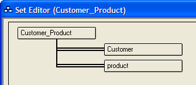

Creating Many-to-Many Sets
A many-to-many set is created by defining a linking table that has one-to-many relationships with two different tables.
In the sample AlphaSports database you can create a many-to-many set named Customer_Product with these steps:
Display the Tables/Sets tab of the Control Panel.
Click New > New Table (Design mode)... to create a new table with two fields. The first field is Customer_ID. It is an 8 character field sorted in Ascending order. The second field is Product_ID. It is an 8 character field sorted in Ascending order.
Save the table as Customer_Product.
Click New > New Set... to create a set.
When the Select the Primary Table for the Set dialog appears, select "Customer_Product" and click OK.
Click the Add link... button to display the Define Link dialog.
In the Child Table field select "Customer".
In the Child Key field select "Customer_ID" and click OK.
Select the Customer_Product rectangle and click the Add link... button to display the Define Link dialog.
In the Child Table field select "Product".
In the Child Key field select "Product_ID" and click OK. The display will now look like this.

Click Save, name the new set, and click OK.
 Note : Alpha Anywhere does
not support forms or browses that will display data from this type of
set. However, you can use Xbasic routines to read from and write to the
set.
Note : Alpha Anywhere does
not support forms or browses that will display data from this type of
set. However, you can use Xbasic routines to read from and write to the
set.
See Also